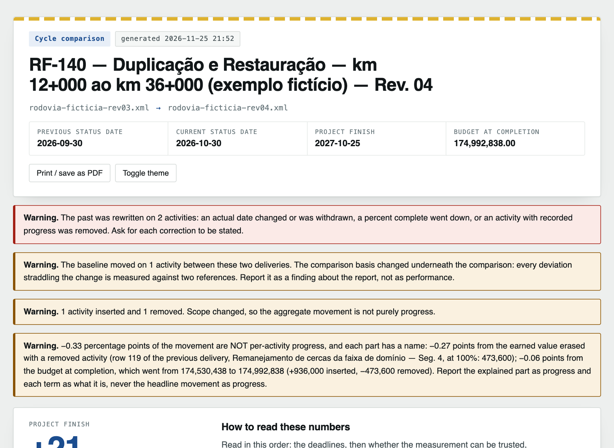
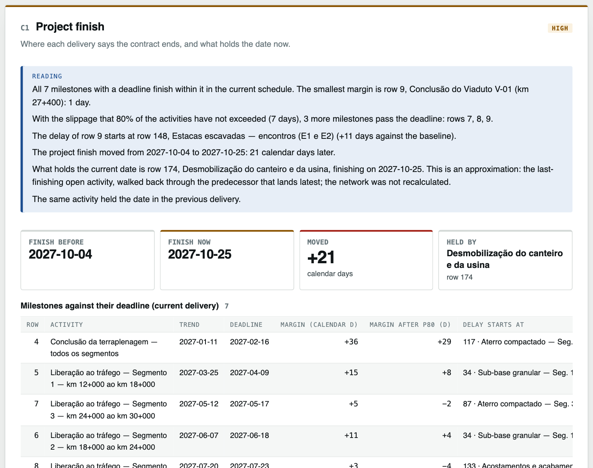
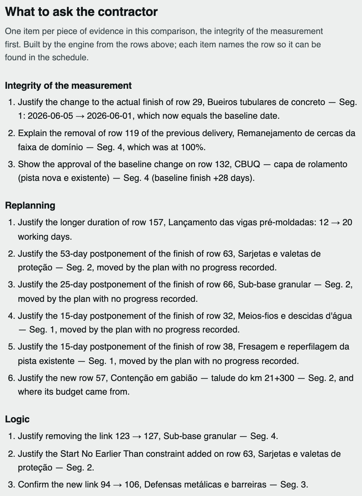
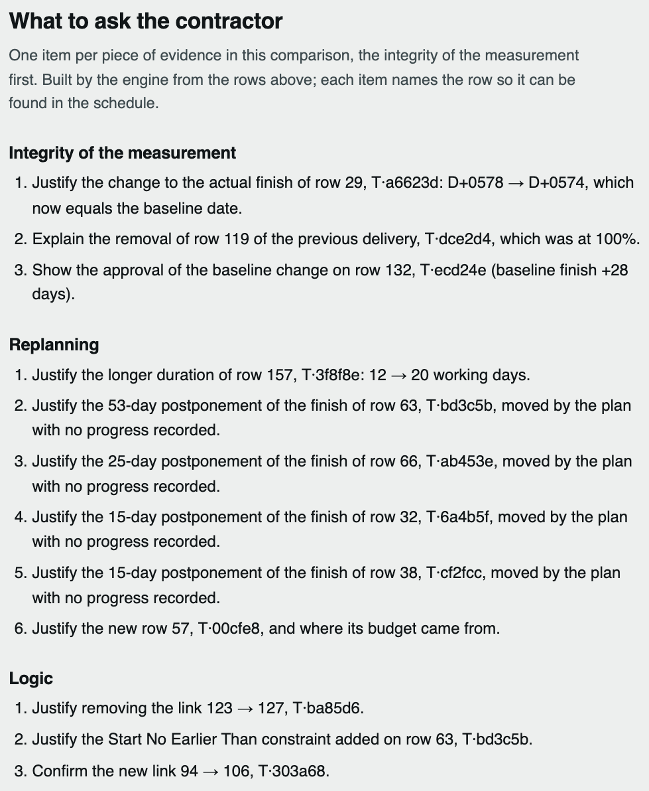

Illustrated guide · version 1.0.0
cronoaudit
Construction schedule audit. An engine on your computer, a skill for your AI agent.
cronoaudit has two parts. The engine reviews the MS Project schedule on your computer and writes the report. The skill teaches your AI agent to run the engine and talk about what it measured. This guide shows both at work on an invented motorway.
01 · Why it exists
It opens, calculates and prints. The number that comes out is believable, and that is why it gets through.
Whoever receives the month's revision checks what can be checked by eye: the finish date, the percentage, the curve. What changes the result usually sits somewhere else. An actual date corrected after the fact. A finished activity that vanished. A baseline that moved. A duration stretched on work that has not even started.
cronoaudit does that check, and it is made of two open-source parts. The first is a Python engine that reads the MS Project schedule, runs on your computer without using the network, and writes a report that opens in the browser. The second is a skill, in the open Agent Skills format, that teaches the AI agent you prefer to run that engine and to talk with you about what it measured. With no agent, the engine works on its own.
This guide shows the tool at work. Everything here was produced on an invented job, the fictitious motorway RF-140, which comes with the installation. Every page can be repeated on your computer.
For those who plan, those who control, and those who sign the monthly report.
The technical manual explains every concept and every calculation. This guide only shows what happens when you run it.
Terminal output or a screen of the report, as the engine produced it. Paths are shown as ~. Every cut is marked.
A sentence written by the engine, by rule, copied unchanged. Activity names come from the example file, which is in Portuguese.
A conversation with an agent composed for this guide. The numbers in it are the engine's, taken from the same runs.
02 · The example
RF-140 is invented: the stretch, the client, the contractor, the quantities, the prices and the dates. The schedule was written to read like a real road job, and most of it is healthy.
| File | Status date | Role |
|---|---|---|
| rodovia-ficticia-rev03.xml | 2026-09-30 | previous delivery |
| rodovia-ficticia-rev04.xml | 2026-10-30 | current delivery |
The job has four 6 km segments and a viaduct at km 27+400. Each segment goes through earthworks, drainage, paving, signing and lighting.
Rev03, on its own, is clean. Rev04 brings a month of real progress and fourteen changes planted on purpose. The list is on page 15.
Progress from 23.44% to 28.01%. Project finish on 2027-10-25. Every milestone within its deadline.
All three sentences are true. None of them tells what was changed in the schedule for the number to add up.
The example's generator is deterministic and lives in examples/make_exemplo.py. Every planted problem is declared at the top of the script.
03 · Install
The installer copies the skill to the folders the agents read, brings the fictitious example and checks its own installation.
This capture was made from a local copy of the repository, in an empty user folder. In the public installation the first line is the command on the cheat sheet, page 23, and the rest is the same.
CRONOAUDIT_EXAMPLE=1 bash install.sh --from .installed -> ~/.claude/skills/cronoauditinstalled -> ~/.agents/skills/cronoauditfictitious example -> ~/cronoaudit-exemploverifying ...self-test passed report ~/cronoaudit-exemplo/rodovia-ficticia-rev04-review.html data ~/cronoaudit-exemplo/rodovia-ficticia-rev04-review.json report ~/cronoaudit-exemplo/rodovia-ficticia-rev03--to--rodovia-ficticia-rev04-cycle.html data ~/cronoaudit-exemplo/rodovia-ficticia-rev03--to--rodovia-ficticia-rev04-cycle.jsonThe example's report opened in the browser. It is also in: ~/cronoaudit-exemplo/rodovia-ficticia-rev03--to--rodovia-ficticia-rev04-cycle.html cronoaudit 1.0.0 is installed. With an AI agent (Claude Code, Copilot or Codex): open the agent in the schedule's folder andask, for example, "review Rev04.xml". If it was already open, close it and open it again. With no agent, in a terminal: python3 ~/.claude/skills/cronoaudit/scripts/review.py schedule.xmlThe schedule comes from MS Project: File > Save As > XML Format.To see the example again: python3 ~/.claude/skills/cronoaudit/scripts/review.py --example Manual and help: https://github.com/Holiv/cronoaudit
One for Claude Code and one for the agents that read ~/.agents, such as Codex and GitHub Copilot. The engine is the same in both.
Before saying it is done, the installer runs the engine on the example and checks the result.
Only Python 3.9 or later. No library is installed. On Windows, the installer brings Python if the computer has none.
CRONOAUDIT_EXAMPLE=1.| Any Agent Skills client | npx skills add Holiv/cronoaudit -g |
| Claude Code, as a plugin | /plugin marketplace add Holiv/cronoaudit |
| A team, through the project | clone the repository into .agents/skills/cronoaudit |
04 · The delivery
The previous delivery goes first. The engine reviews rev04 on its own and then compares the two.
python3 ~/.claude/skills/cronoaudit/scripts/review.py rodovia-ficticia-rev03.xml rodovia-ficticia-rev04.xml --free --lang en=== Review of the current delivery === Schedule integrity review -- rodovia-ficticia-rev04.xml⋯ 4 lines cut ⋯Findings, in the order the method runs them: A1 2 activities Execution out of sequence [as successors 1, as predecessors 1]⋯ 8 lines cut ⋯Network findings (A1, A2) gate everything below them. If they are non-zero,every forecast date in this file is computed over logic the works does not follow.⋯ 2 lines cut ⋯=== Cycle comparison === Cycle comparison previous rodovia-ficticia-rev03.xml status 2026-09-30T17:00:00 current rodovia-ficticia-rev04.xml status 2026-10-30T17:00:00 earned 23.44% -> 28.01% movement 4.57 percentage points decomposition sums to 4.90 points unexplained residue -0.33 points dates moved: 12 with actuals behind them -> execution 89 with no actuals -> replan 1 with the BASELINE itself moved -> the reference moved scope: 1 inserted, 1 removed project finish: 2027-10-04T17:00:00 -> 2027-10-25T17:00:00 (21 calendar days) critical path: 0 entered, 0 left, 71 lost a day of float or more logic: 1 links added, 1 removed, 0 lags and 0 types changed; constraints 1 added, 0 changed, 0 removed duration changed on work not started: 1 PAST REWRITTEN: 0 actual starts, 1 actual finishes, 0 percents that went down, 1 activities with progress removed⋯ 16 lines cut ⋯ report ~/cronoaudit-exemplo/rodovia-ficticia-rev03--to--rodovia-ficticia-rev04-cycle.html data ~/cronoaudit-exemplo/rodovia-ficticia-rev03--to--rodovia-ficticia-rev04-cycle.json
Row 36 started while its predecessor, row 35, was still open. The engine marks both ends of the link, as MS Project itself does.
The headline moved 4.57 points. The work done adds up to 4.90. The difference is not progress, and the engine gives each part of it a name.
An actual finish was altered and an activity with progress vanished. The report will show this before any percentage.
05 · The report
It is one HTML file with no dependency. It opens the same on a computer with no network. Every section starts with a short reading, written by rule.

The top of the comparison report. The four warnings come before the first number. This edition forced English with --lang en. By default the report follows the schedule, which is in Portuguese.
The past was rewritten on 2 activities: 0 actual starts and 1 actual finish changed, 0 percents complete went down, and 1 activity with recorded progress was removed.
Every figure the previous cycle reported on these activities rested on a record that no longer exists. Ask for each correction to be stated.
Progress comes fourth on purpose. A percentage is only worth something once you know whether the record behind it was touched.
Every claim in the report is marked measured, inferred or reported. Each section states the criterion it used and how to reproduce the figure in MS Project.
06 · Deadlines
The rev04 forecast respects the seven future deadlines. The margin is what tells the story.
Drawn from the engine's figures: forecast, deadline and margin in calendar days for each milestone. P80 is the slippage that 80% of the finished activities have not exceeded.
All 7 milestones with a deadline finish within it in the current schedule. The smallest margin is row 9, Conclusão do Viaduto V-01 (km 27+400): 1 day.
With the slippage that 80% of the activities have not exceeded (7 days), 3 more milestones pass the deadline: rows 7, 8, 9.
The delay of row 9 starts at row 148, Estacas escavadas — encontros (E1 e E2) (+11 days against the baseline).
A milestone with one day of margin is not on time. It is one surprise away from being late. The report puts that margin on the first screen and says in which activity the delay starts. Between the two deliveries, the float of the Segment 3 milestone fell from 13 to 3 days.
It is not a forecast. It is the distribution of what has already happened on this job, applied to the dates still ahead. It is there to order your attention.

The same section in the report: the finish before and now, and the table of milestones against their deadlines.
07 · Integrity of the measurement
An actual date is a record. A percentage is a measurement already reported. The baseline is the ruler. When one of them reads differently from one month to the next, last month's number has lost its footing.
None of the three cases raises an error in MS Project. The file opens, the curve closes and the percentage goes up. Only the comparison between the two deliveries shows what was edited.
It does not say there was bad faith. A correction can be legitimate. It says the correction exists, where it is, and asks for it to be stated.
08 · Replanning and logic
Of the dates that moved, 12 have execution behind them and 89 have none. The five edits below are of the second kind: the plan rewritten, with no work behind it.
1 link added, 1 removed, 0 with the lag changed and 0 with the type changed, between activities present in both deliveries.
Constraints on unfinished activities: 1 added, 0 changed and 0 removed.
71 unfinished activities lost a working day of float or more; the largest loss is 25.0 days, on row 63.
Row 63 received a date constraint and is held until 2026-12-28. It is not on the critical path, but it lost 25 working days of float, the largest loss of the cycle.
09 · Progress
The difference is small and it has a name. It is the kind of number that disappears inside an aggregate percentage.
Drawn from the engine's figures. The curve uses the baseline cost and the physical percentage that the file itself spreads over time.
Weighted progress went from 23.44% to 28.01%: 4.57 points. Per-activity progress adds up to 4.90, more than the movement: 0.33 points were taken off by something other than work done.
The difference is named: −0.27 points from the earned value erased with a removed activity (row 119 of the previous delivery, Remanejamento de cercas da faixa de domínio — Seg. 4, at 100%: 473,600); −0.06 points from the budget at completion, which went from 174,530,438 to 174,992,838 (+936,000 inserted, −473,600 removed).
Cumulative SPI is 0.902: the works has earned 90.2% of what the plan expected by now.
The other earned-value method would read 28.46% instead of 28.01%, a gap of 0.44 points. Switching method changes the curve, not the works.
100% of that gap comes from row 55, Aterro compactado — Seg. 2: 95% complete by duration, 57% physical.
The engine does not ask for trust. It recomputes earned value activity by activity and compares it with what MS Project stored.
The skill's earned value matched the file's own on 43 of 43 leaves to the cent, zero against zero left out: nothing differs.
Row 55 is 95% complete by duration and 57% by physical progress. Depending on the method chosen, the progress of the whole job changes by 0.44 points. The report shows both and says which activity the gap comes from.
10 · Forensics
The engine walks each milestone's driving chain backwards and shows where the delay came in and where it grew.
Drawn from the engine's figures. Each point is an activity of the chain, by row number. The height is its finish variance against the baseline.
| Row | Activity | Finish | Variance |
|---|---|---|---|
| 148 | Estacas escavadas — encontros (E1 e E2) | 2026-09-21 | +11 |
| 149 | Blocos de coroamento | 2026-11-10 | +17 |
| 151 | Pilares | 2027-01-20 | +17 |
| 152 | Travessas | 2027-03-11 | +17 |
| 154 | Aparelhos de apoio | 2027-03-23 | +17 |
| 157 | Lançamento das vigas pré-moldadas | 2027-04-23 | +25 |
| 158 | Pré-lajes e armação do tabuleiro | 2027-06-03 | +25 |
| 159 | Concretagem do tabuleiro | 2027-06-29 | +25 |
| 161 | Barreiras New Jersey e guarda-corpos | 2027-07-20 | +25 |
| 162 | Juntas de dilatação | 2027-07-28 | +25 |
| 165 | Impermeabilização e pavimentação do tabuleiro | 2027-08-09 | +25 |
| 166 | Sinalização e iluminação do viaduto | 2027-08-19 | +25 |
| 167 | Prova de carga e inspeção final | 2027-08-26 | +25 |
| 9 | Conclusão do Viaduto V-01 (km 27+400) | 2027-08-26 | +25 |
The project finish moved from 2027-10-04 to 2027-10-25: 21 calendar days later.
7 of 7 future milestones trace to a named origin; activity 148, Estacas escavadas — encontros (E1 e E2), originates delay on 2 of them.
What holds the current date is row 174, Desmobilização do canteiro e da usina, finishing on 2027-10-25. This is an approximation: the last-finishing open activity, walked back through the predecessor that lands latest; the network was not recalculated.
The delay starts in work that was executed, on the piles of row 148. Then it grows on an activity that has not started: row 157 gained eight working days of duration in this delivery.
The forensics show the mechanism. They are not a delay claim, which needs contemporaneous records and a formal method.
11 · Network quality
The rev04 network is linked and has no negative float. The two metrics it fails are the ones that measure execution against the baseline.
Built from the engine's figures for rev04. cronoaudit computes the fourteen metrics and quotes the thresholds. It does not certify a schedule against DCMA.
The network fails 2 of the quantitative metrics: Q11 Missed activities, Q14 Baseline execution index.
Of 43 activities due by the status date, 28 finished on time: a baseline execution index of 0.65.
Of the 13 metrics computable in both deliveries, 4 worsened, 3 improved and 6 did not move.
Baseline execution index: 0.80 before, 0.65 now.
Four open activities have no successor: rows 77, 89, 136 and 170. That is 4 of 96, under the 5%. The same four and the new row 57 carry 79 to 205 working days of float.
| Code | Check | In rev04 |
|---|---|---|
| A1 | Execution out of sequence | 2 |
| A2 | Total inversion | 0 |
| H | Trend elapsed with no progress | 0 |
| E | Pulled forward and never started | 0 |
| C | Delayed beyond the threshold | 0 |
| G | Duration incompatible with the window | 0 |
| B | Milestone with no deadline | 0 |
| F | In progress at zero percent | 0 |
| P | Pending record | 0 |
The two A1 activities are the two ends of a single pair: row 36 started in October with row 35 still open. Because the pair is off the critical path, the engine names it rather than reading the network as broken.
12 · Looking forward
The engine projects from what the job has already shown, and states the limit of each projection.
The next 4 weeks plan 11.42% of earning; the practised rate delivers 3.99%. Not reachable without a change of pace.
TSPI is 1.040: the remainder must run 4.0% above the plan to finish on the planned date. Modest because most of the duration is still ahead, not because the lag is small.
50% of the remaining cost sits in months the calendars reserve for bad weather, 52% if everything slips thirty days.
At this efficiency the independent finish is 2027-10-22 and the schedule's own finish is 2027-10-25: within 7 days of each other, the achieved pace and the schedule agree on the date.
Both charts were drawn from the engine's figures for rev04.
In aggregate, the achieved pace and the schedule agree on the finish date. In the short term, from 2026-10-31 to 2026-11-27, 11 activities must start and 8 must finish, and the plan asks for almost three times what the job has been delivering. Both are true, and the second is the one that needs a conversation now.
Both calendars reserve days from December to March. Half of the remaining cost falls in those months. A thirty-day slip pushes more work into the reserve.
13 · What to ask
The last section of the report turns the comparison into requests. Each item names the row, so it can be found in the schedule. The integrity of the measurement comes first.
engine readingThe twelve items, as the engine wrote them for the example.
The list is ready to go into minutes or a message. No item is an opinion. Each one points at a difference between the two files the contractor delivered.
Ask for the executive summary. The agent writes the text with these figures and the engine inserts it into the report, marked with who wrote it.
14 · The answer key
Each pin carries the number of its row in the table. The hollow circles apply to the whole job.
| No. | What was planted in rev04 | Where the report shows it | Page |
|---|---|---|---|
| 1 | Real progress in October on a dozen activities | Dates moved with actuals behind them: 12. Progress from 23.44% to 28.01% | 10 |
| 2 | Row 63 held by a constraint until 2026-12-28, nothing executed | Replanning: start 46 days later, finish 53 days later. One constraint added | 9 |
| 3 | Row 36 started with row 35 still open | Finding A1, out of sequence, both ends marked | 12 |
| 4 | Rows 77, 89, 136 and 170 with no successor | Metric Q1: 4 of 96, under the threshold | 12 |
| 5 | The same four and row 57 with 79 to 205 days of float | Metric Q6: 5 of 103 | 12 |
| 6 | Row 55 at 95% by duration and 57% physical | S-curve: the other method would read 0.44 points more. Productivity: inconsistent measurement | 10 |
| 7 | Actual finish of row 29 changed from 2026-06-05 to 2026-06-01 | Past rewritten: one actual finish, now equal to the baseline date | 8 |
| 8 | One link added (94 → 106) and one removed (123 → 127) | Logic changed | 9 |
| 9 | Row 157, not started: 12 days became 20 | Duration changed on work not started | 9 |
| 10 | Baseline of row 132 moved four weeks | The reference moved: a warning about the comparison basis | 8 |
| 11 | Row 57 exists only in rev04. An activity at 100% exists only in rev03 | Scope: 1 inserted and 1 removed. 0.33 points of the movement are not progress | 10 |
| 12 | Float of the Segment 3 milestone fell from 13 to 3 days | Critical path: float lost. The forensics name the origin | 7 |
| 13 | Project finish from 2027-10-04 to 2027-10-25, through the viaduct | Project finish and the chain that drives it | 11 |
| 14 | Half of the remaining cost falls between December and March | Rain exposure: 50% in reserved months, 52% if everything slips thirty days | 13 |
The tool's test, test_checks.py, checks that the two files are what the generator writes and that every item above is found. These figures hold for the .xml files. The example's .mpp files give slightly different ones, because MS Project recalculates the schedule when it opens it.
15 · With an agent
The skill teaches the agent to run the engine and to quote what it measured. The agent does not work the schedule out in its head.
Compare rev03 with rev04 and tell me what changed, by topic.
I ran the engine on both deliveries. I start with the deadline and, before progress, with what touches the measurement.
The project finish moved from 2027-10-04 to 2027-10-25: 21 calendar days later.
All 7 milestones with a deadline finish within it in the current schedule. The smallest margin is row 9, Conclusão do Viaduto V-01 (km 27+400): 1 day.
Three points need an answer from the contractor before any percentage:
1 of the changed actual dates now falls exactly on the baseline date (row 29, Bueiros tubulares de concreto — Seg. 1, 2026-06-05 → 2026-06-01): the record was made to agree with the plan; ask for the evidence behind it.
1 activity with recorded progress was removed from the schedule altogether, taking 473,600 of earned value with it; the largest is row 119 of the previous delivery, Remanejamento de cercas da faixa de domínio — Seg. 4, at 100%.
On the driving chain of Liberação ao tráfego — Segmento 4 — km 30+000 ao km 36+000, row 132, CBUQ — capa de rolamento (pista nova e existente) — Seg. 4, shows a variance of -9 working days against a baseline that moved +28 calendar days this cycle: part of that variance is the reference moving, not the works.
On progress:
Weighted progress went from 23.44% to 28.01%: 4.57 points. Per-activity progress adds up to 4.90, more than the movement: 0.33 points were taken off by something other than work done.
The report is open in the browser. Do you want the list of what to ask?
Where does the viaduct's delay come from?
The delay of row 9 starts at row 148, Estacas escavadas — encontros (E1 e E2) (+11 days against the baseline).
1 activity with no actual start in either delivery had their duration edited: 1 longer and 0 shorter, a net 8.0 working days. Nothing was executed on them; this is the plan rewritten.
That is row 157. The longer duration is on the list of what to ask:
Justify the longer duration of row 157, Lançamento das vigas pré-moldadas: 12 → 20 working days.
Review Rev04.mpp. Compare Rev03 with Rev04 and tell me what changed. Which milestones are at risk? Write the executive summary and generate the final report.
To its provider, under the terms of your account or your company's. The engine sends nothing. If the schedule may not leave the computer, use secret mode, on page 18.
16 · Agents
cronoaudit follows the open Agent Skills format. This guide covers three agents. It also works with no agent at all.
Which milestones are at risk of missing their deadline?
All 7 milestones with a deadline finish within it in the current schedule. The smallest margin is row 9, Conclusão do Viaduto V-01 (km 27+400): 1 day.
With the slippage that 80% of the activities have not exceeded (7 days), 3 more milestones pass the deadline: rows 7, 8, 9.
Margins today, in calendar days: row 7, +5. Row 8, +3. Row 9, +1.
The next 4 weeks plan 11.42% of earning; the practised rate delivers 3.99%. Not reachable without a change of pace.
What do I ask the contractor first?
There are 12 items in three groups. The integrity of the measurement comes first:
Justify the change to the actual finish of row 29, Bueiros tubulares de concreto — Seg. 1: 2026-06-05 → 2026-06-01, which now equals the baseline date.
Explain the removal of row 119 of the previous delivery, Remanejamento de cercas da faixa de domínio — Seg. 4, which was at 100%.
Show the approval of the baseline change on row 132, CBUQ — capa de rolamento (pista nova e existente) — Seg. 4 (baseline finish +28 days).
Both conversations are illustrations. The sentences with the red bar are the engine's.
| Agent | Free mode | Secret mode |
|---|---|---|
| Claude Code | Tested end to end. | Tested end to end. The folder carries rules and a lock that keeps the agent inside it. |
| GitHub Copilot CLI | Tested on 21/11/2026. | Tested on 25/11/2026. Without the lock, it followed the folder's written rules. |
| Codex | Installation and use per the provider's documentation. | |
The lock that keeps the agent inside the secret-mode folder exists only in Claude Code. In other agents, the same rules arrive as written instructions.
Each agent needs an account with its provider. Check your company's policy before using an agent with a contract schedule.
17 · Secret mode
On the real file, on your computer, as always.
In a separate folder, with names replaced by codes, dates by day counts and money multiplied by a secret factor.
The report with the real data is built on your computer, when you ask for it.
python3 ~/.claude/skills/cronoaudit/scripts/review.py rodovia-ficticia-rev04.xml --lang enThe results will carry the real data (free mode). If an AI agent reads them later, what it reads goes to its provider. Go on? [y] yes / [secret] a coded copy for the agent / [never] yes, and do not ask again> ySchedule integrity review -- rodovia-ficticia-rev04.xml⋯ 5 lines cut ⋯ A1 2 activities Execution out of sequence [as successors 1, as predecessors 1]⋯ 10 lines cut ⋯ report ~/cronoaudit-exemplo/rodovia-ficticia-rev04-review.html data ~/cronoaudit-exemplo/rodovia-ficticia-rev04-review.json
At a terminal, the engine asks the mode before opening the schedule. Here the answer was y. Answering secret leads to the next page.
python3 ~/.claude/skills/cronoaudit/scripts/review.py rodovia-ficticia-rev03.xml rodovia-ficticia-rev04.xml --secret --lang encronoaudit: SECRET mode was requested (by --secret), but this process was started by an agent (CLAUDE_CODE_CHILD_SESSION is set), so the run stopped here. Nothing was read and nothing was run. Secret mode protects only if the agent never holds the original. Run this same command in your own terminal: it prints a work folder, and the agent is started inside it. cronoaudit does not fall back to free mode on its own.
Secret mode protects only if the agent never holds the original. That is why the person runs the command, in their own terminal, or from the button on the Cronoaudit tab in MS Project.
| Becomes a code | Example | Stays real |
|---|---|---|
| Names of projects, activities, resources and calendars | T·3fa91c | Durations, percentages, counts, ratios, row numbers and WBS codes. |
| Dates | D+0412, days from a secret origin | |
| Money | ¤1,234,567, multiplied by a secret factor |
18 · Secret mode, in the terminal
python3 ~/.claude/skills/cronoaudit/scripts/review.py rodovia-ficticia-rev03.xml rodovia-ficticia-rev04.xml --secret --lang en --workdir ~/cronoaudit-workcronoaudit: SECRET mode. The engine runs here, on the real file; an agent will read only the coded copy.⋯ 1 line cut ⋯Schedule integrity review -- P·f89e01⋯ 17 lines cut ⋯Cycle comparison previous P·1e91a8 status D+0695T17:00:00 current P·f89e01 status D+0725T17:00:00 earned 23.44% -> 28.01% movement 4.57 percentage points decomposition sums to 4.90 points unexplained residue -0.33 points⋯ 5 lines cut ⋯ project finish: D+1064T17:00:00 -> D+1085T17:00:00 (21 calendar days)⋯ 9 lines cut ⋯ largest contributions to the movement: +1.520 pp id 35 6.0% -> 85.0% T·2deee1 +0.941 pp id 34 39.0% -> 100.0% T·bcd7f7 +0.673 pp id 149 25.0% -> 82.0% T·f77c84 +0.368 pp id 31 39.0% -> 100.0% T·8fc725⋯ 6 lines cut ⋯Done. The coded copy, the only thing the agent should read, is in: ~/cronoaudit-work/b1aa2d0d62Now open your AI agent inside that folder: cd "~/cronoaudit-work/b1aa2d0d62" then claude, copilot or codexTalk about activities by their code or row number: whatever you type with a real name goes to the AI service.In Claude Code the folder has a lock that keeps the agent inside it. When it asks whether you trust the folder, say yes: that is what turns the lock on, and it asks again for every new folder. In other agents the folder carries the rules in writing.When you ask, the agent builds the report with the real data on this computer.
Captured with the fictitious example only, in a terminal without the agent-session variables, as the test suite does.
ls -A1 ~/cronoaudit-work/b1aa2d0d62.claudeAGENTS.mdCLAUDE.mdcronoaudit-secret.jsoncurrent-review-forecast.jsoncurrent-review-forensics.jsoncurrent-review-productivity.jsoncurrent-review-quality.jsoncurrent-review-readings.jsoncurrent-review-scurve.jsoncurrent-review.htmlcurrent-review.jsonprevious--to--current-cycle-readings.jsonprevious--to--current-cycle.htmlprevious--to--current-cycle.json
Compare it with page 5. The percentages and the counts are the same. File names became P·, activity names became T· and dates became D+.
The coded copies of the reports and of the figures, and the rules for the agent. The original is not there. The table that undoes the codes stays in a vault, outside the folder.
Read only the files in the folder. Never ask for or open the original schedule. Quote the codes as written. Write the synthesis only when the person asks.
19 · Secret mode, side by side
The same sentence of the engine, in this guide's two runs. On the left, the real report. On the right, the copy the agent reads.
The project finish moved from 2027-10-04 to 2027-10-25: 21 calendar days later.
The project finish moved from D+1064 to D+1085: 21 calendar days later.
1 of the changed actual dates now falls exactly on the baseline date (row 29, Bueiros tubulares de concreto — Seg. 1, 2026-06-05 → 2026-06-01): the record was made to agree with the plan; ask for the evidence behind it.
1 of the changed actual dates now falls exactly on the baseline date (row 29, T·a6623d, D+0578 → D+0574): the record was made to agree with the plan; ask for the evidence behind it.
1 activity with recorded progress was removed from the schedule altogether, taking 473,600 of earned value with it; the largest is row 119 of the previous delivery, Remanejamento de cercas da faixa de domínio — Seg. 4, at 100%.
1 activity with recorded progress was removed from the schedule altogether, taking ¤4,473,458 of earned value with it; the largest is row 119 of the previous delivery, T·dce2d4, at 100%.
engine readingSentences copied from the readings files of the two runs. The 21 days, the 100% and the row number are the same on both sides.

What to ask, in the real report.

The same section, in the coded copy.
20 · Secret mode, the way back
What changed in the finish, and what do I need to ask first?
The project finish moved from D+1064 to D+1085: 21 calendar days later.
1 of the changed actual dates now falls exactly on the baseline date (row 29, T·a6623d, D+0578 → D+0574): the record was made to agree with the plan; ask for the evidence behind it.
The delay of row 9 starts at row 148, T·d2d837 (+11 days against the baseline).
Justify the longer duration of row 157, T·3f8f8e: 12 → 20 working days.
Do you want me to write the synthesis and build the final report with the real names? It is built on your computer.
python3 ~/.claude/skills/cronoaudit/scripts/secret_decode.py text ~/cronoaudit-work/b1aa2d0d62 < coded-answer-en.txtThe project finish moved from 2027-10-04 to 2027-10-25: 21 calendar days later.1 of the changed actual dates now falls exactly on the baseline date (row 29, Bueiros tubulares de concreto — Seg. 1, 2026-06-05 → 2026-06-01): the record was made to agree with the plan; ask for the evidence behind it.The delay of row 9 starts at row 148, Estacas escavadas — encontros (E1 e E2) (+11 days against the baseline).Justify the longer duration of row 157, Lançamento das vigas pré-moldadas: 12 → 20 working days.
The four sentences above, saved to a file and translated by the text command. Only the person runs that command, in their own terminal, outside the agent.
python3 ~/.claude/skills/cronoaudit/scripts/secret_decode.py finish --no-opencronoaudit: 2 report(s) decoded on this machine; check passed, 7386 value(s) equal to the engine's own output. Written beside the original.
The finish command decodes the reports and checks every value against the engine's own output.
The codes do not make the schedule anonymous: its structure and durations stay readable. It does not replace your company's policy on AI services.
Whatever you type with a real name goes to the AI service. Refer to activities by their code or row number.
21 · Day to day
| You prefer | Path | What you do |
|---|---|---|
| To talk to an AI and let it run things | A. Through the agent | Ask in words: review Rev04.mpp |
| A button, inside MS Project itself | B. The Cronoaudit tab (Windows) | Click Relatório or Analisar |
| No AI, or a computer with no agent | C. The engine | One command, on the exported XML |
In MS Project: File, Save As, XML Format. That is Project's own format and nothing cronoaudit uses is lost. On Windows with Project installed, the engine also takes the .mpp directly and asks Project to export it. The file is opened read-only.
The technical manual explains every concept, every section of the report and how to reproduce every figure. Source, licence and the latest version: github.com/Holiv/cronoaudit
Without the previous delivery, the report is the review of that revision: deadlines, nine checks, S-curve, progress by group, productivity by resource, fourteen metrics, looking forward and forensics.
To weigh progress by discipline instead of by segment, add --group-by DISCIPLINA. The example carries two custom fields, DISCIPLINA and SEGMENTO.
Weighted progress is 28.01% against 31.07% planned: 3.06 points behind.
Segmento 2 — km 18+000 ao km 24+000 carries 24.0% of the budget and stands at 20.7% earned against 24.6% planned.
1 group is more than 5 points behind their own plan; the largest is Obras de Arte Especiais — Viaduto V-01 (km 27+400).
22 · Cheat sheet
macOS and Linux, in Terminal:
curl -fsSL https://raw.githubusercontent.com/Holiv/cronoaudit/main/install.sh | bash
Windows, in PowerShell:
irm https://raw.githubusercontent.com/Holiv/cronoaudit/main/install.ps1 | iex
To update, run the same command again.
R=~/.claude/skills/cronoaudit/scripts/review.py python3 $R --example # the example python3 $R Rev04.xml # one delivery python3 $R Rev03.xml Rev04.xml # two deliveries
--free | free mode, without the question |
--secret | secret mode: writes the coded folder |
--group-by DISCIPLINA | weighs by a custom field |
--outdir folder | where to write the report |
--lang en | forces the report language |
With two files, the previous one goes first. On Windows, use the line the installer prints at the end: the Python it brings is not on the PATH.
review.py Rev03.xml Rev04.xml --secret| Analisar | asks the mode and opens your agent with the schedule |
| Comparar versões | the same, with two versions from the same folder |
| Relatório, Comparar | no AI: writes the report and opens it in the browser |
| Exportar XML | only exports, to take to another computer |
github.com/Holiv/cronoaudit
Apache 2.0 licence. Technical manual in docs/manual. Example in examples.
| Does any milestone pass its deadline? | Deadlines |
| Did anyone touch what was already measured? | Integrity of the measurement |
| Did the date move by the works or by the plan? | Replanning |
| Is the percentage all progress? | Progress |
| Where did the delay come in? | Forensics |
| What do I ask the contractor? | What to ask |
Review Rev04.mpp.
Compare Rev03 with Rev04 and tell me what changed.
Which milestones are at risk of missing their deadline?
Where does this milestone's delay come from?
Write the executive summary and generate the final report.
1. Deadlines. 2. Integrity of the measurement. 3. Replanning. 4. Progress. 5. Float and critical path. 6. Network quality. Last, what to ask the contractor.
| Claude Code | tested end to end |
| GitHub Copilot CLI | free mode on 21/11/2026, secret mode on 25/11/2026 |
| Codex | per the provider's documentation |
The secret-mode lock exists only in Claude Code.
Reads MS Project (XML, or .mpp on Windows with Project). Does not read Primavera P6. Computes the fourteen DCMA-style metrics and does not certify against DCMA. Does not produce a delay claim.